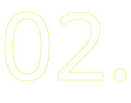
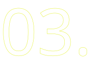
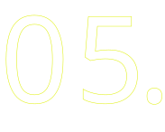

User Experience Designer | Web Designer
Service Designer | UI Specialist | User Researcher | Product Designer | Illustrator | Film Photographer | Frontend Developer


GRAD. COLLEGE WEBSITE REDESIGN


NEW GRADUATE PORTAL


SERVICE DESIGN BLUEPRINTING

OU MARKETING & PROMO MATERIAL


TRAVALLURE
When I'm not working I like to stay busy with...
CHOMPHAUS
Book Design
Illustrator
InDesign
Procreate
Creating memories (and a cookbook) with my friends. The design goal of this project is to expand my design horizons by having each recipe page utilize a completely different design style while also being a fun way to have friends over for dinner.
View ProjectTHE SOUNDBAR
Wordpress
Illustrator
InDesign
Photography
Overhauled the branding and website for Listen Up OKC to better align with the goal of the business. Included a brand guide, photos and suggestions on how to improve the space, and a Wordpress site using Elementor and Astra.
View ProjectPHOTOGRAPHY
Film Photography
Lightroom
Capturing and documenting my favorite moments of each year and submitting to local galleries from time to time. Working on designing photobooks based on my travels to different parts of the country and the world.
View ProjectABOUT ME
I'm Alex, a passionate UX designer based in Oklahoma City. Currently, I'm an essential part
of the web team at the University of Oklahoma, where I'm engaged in opportunities to enhance OU's digital experience
in a myriad of ways. Outside of my professional endeavors, I enjoy freelance work and diving into personal projects
that allow me to explore new ideas and push boundaries.
Whether it's collaborating with clients to bring their
visions to life or tinkering with my own concepts, I'm constantly seeking out opportunities to innovate and refine my
craft. When I'm not immersed in the world of design, you can often find me behind the lens of my beloved film camera,
capturing moments and stories through the art of photography. There's something magical about the tactile process and
timeless aesthetic of film that never fails to inspire me. Let's connect and embark on a journey of creativity together!